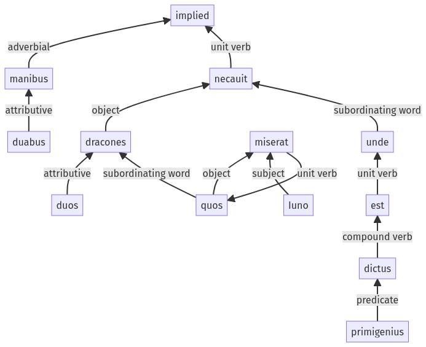

Hyginus, Fabulae, 30pr.1.1-30pr.1.15a
| 30pr.2.1-30pr.2.15a
Sentence 413
30pr.1.1-30pr.1.15a
Infans cum esset, dracones duos duabus manibus necauit, quos Iuno miserat, unde primigenius est dictus.
2 Infans cum esset
1 dracones duos duabus manibus necauit
2 quos Iuno miserat
2 unde primigenius est dictus
Infans cum esset, dracones duos duabus manibus necauit, quos Iuno miserat, unde primigenius est dictus.
Highlighting:
- connecting words
- unit verb
- subject
- object
Color code:
- independent clause (level 1, transitive verb)
- subordinate clause (level 2, linking verb)
- subordinate clause (level 2, transitive verb)
- subordinate clause (level 2, transitive verb)
